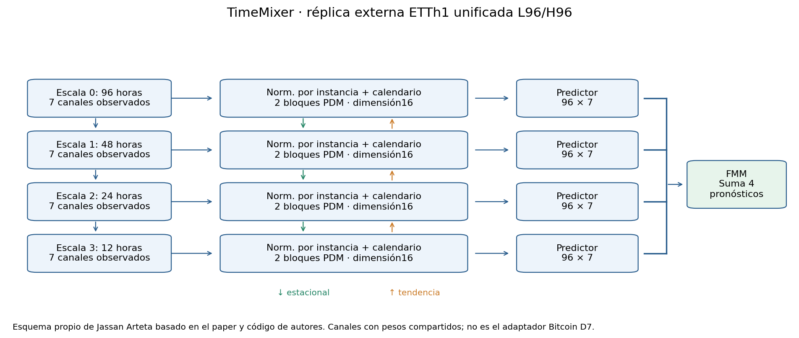
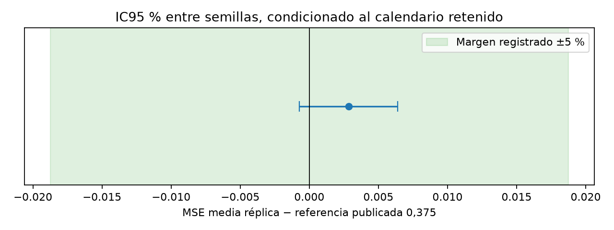
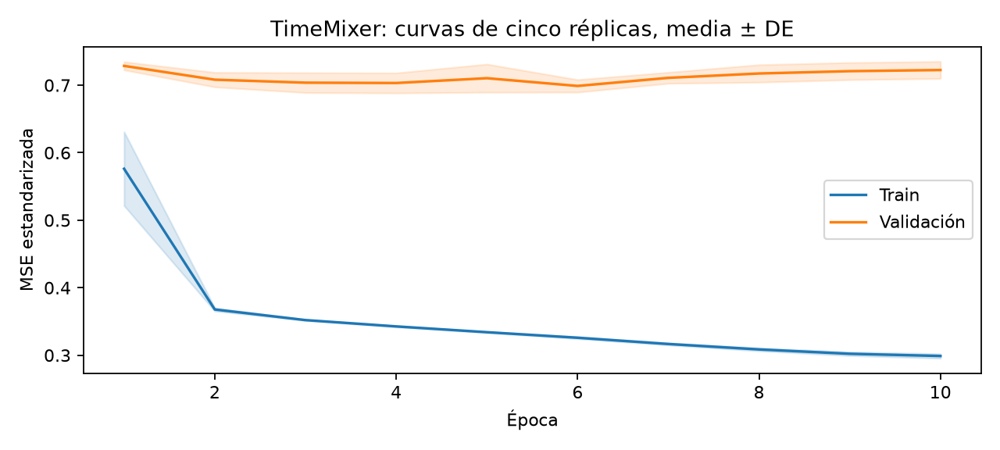
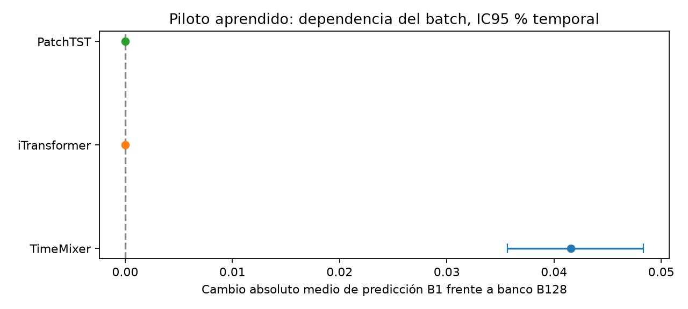
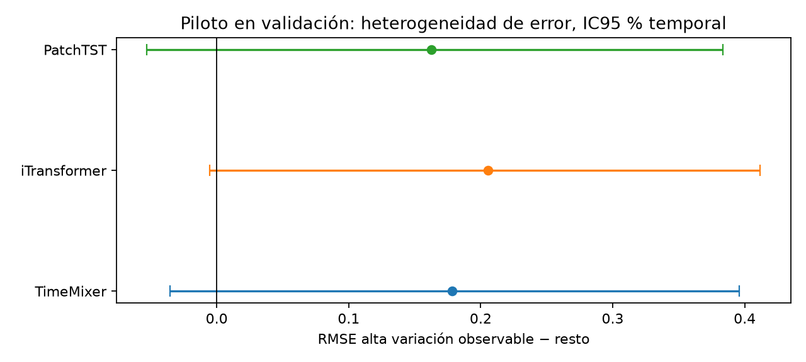

5. Paper Guía y Replicación#
Alcance: los datos, controles y experimentos ya ejecutados de esta sección se conservan como evidencia histórica. No acreditan el benchmark del catálogo obligatorio vigente de 16 sistemas, definido en §43, ni las recetas restauradas de §44. Cualquier presupuesto o receta anterior requiere revisión y nuevo registro antes de reutilizarse.
Este capítulo desarrolla la sección 5 de la guía completa de 65 páginas, recibida después de sus dos capturas iniciales (página16 y continuación). Distingue la réplica externa de ETTh1 del benchmark Bitcoin D7. El diseño, las fuentes, las cinco semillas y el criterio de comparación se registraron antes de los ajustes con datos.
5.1 Paper guía y justificación de selección#
Se selecciona TimeMixer como paper guía del proyecto: Wang, S., Wu, H., Shi, X., Hu, T., Luo, H., Ma, L., Zhang, J. Y. y Zhou, J. (2024). TimeMixer: Decomposable Multiscale Mixing for Time Series Forecasting. International Conference on Learning Representations (ICLR). DOI del preprint: 10.48550/arXiv.2405.14616 [Wang et al., 2024].
El manuscrito leído es 2405.14616v1, de 28 páginas físicas. Ese DOI identifica el preprint; no se presenta como DOI editorial ni como evidencia de un cuartil de revista. La conferencia, la versión leída y el código utilizado se registran por separado.
La selección se fijó antes de los ajustes con datos y no depende de haber obtenido una buena métrica propia. Se apoya en cinco razones verificables:
Criterio |
Evidencia y alcance |
|---|---|
Tarea transferible |
Pronóstico temporal multivariante mediante descomposición y mezcla de escalas. Motiva una adaptación a volatilidad; no demuestra desempeño en Bitcoin |
Impacto rastreable |
El original aparece en la exportación Scopus aportada con 609 citas, EID |
Configuración rastreable |
Tabla 7, página PDF 14, y preset original |
Resultado parcial identificable |
ETTh1 multivariante, configuración unificada: MSE 0,375 y MAE 0,400, tabla 13, página PDF 17. La configuración optimizada de tabla 14 corresponde a otra condición |
Ejecución viable |
Arquitectura de MLP y pooling con código de autores recuperable. El perfil previo de TimesNet mostró un coste CPU mucho mayor; se usó ese dato de recursos, no una comparación de precisión test, para escoger la réplica viable |
El código de referencia es kwuking/TimeMixer, fijado en el commit e24610583b36fdd8c76cc17a8df4e65759a5f460. Los recibos identifican por hash el modelo, sus dependencias relevantes, el preset y el controlador. El port de Time-Series-Library constituye otra versión: no se combinan sus defaults con el código original sin declararlo.
La tabla de registros originales conserva el registro de impacto y su procedencia; no se suman citas de otras bases ni de estudios aplicados. La presencia de TimeMixer en aplicaciones de energía y otros dominios es respaldo de transferencia. Ni esas aplicaciones ni la réplica ETTh1 prueban capacidad para pronosticar σ₇ de BTCUSDT. Tampoco se atribuye al paper guía la validación de nuestro contrato D7×5.
5.2 Modelo original: arquitectura, formulación y supuestos#
5.2.1 Entrada, salida y flujo de datos#
El caso replicado recibe 96 observaciones horarias de siete variables ETTh1 y pronostica los 96 valores futuros de esas mismas siete variables. No recibe OHLCV de Bitcoin ni genera una volatilidad escalar. La figura 1 de la página PDF 4 presenta la arquitectura; la figura 2 de la página PDF 5 desarrolla las mezclas estacional, de tendencia y de predictores.
El flujo es: entrada → pirámide de average pooling → normalización por instancia y embedding → dos bloques Past-Decomposable-Mixing (PDM) → cuatro predictores por escala → suma Future-Multipredictor-Mixing (FMM) → inversión de la normalización de instancia. La configuración registrada usa channel_independence=1: aplica parámetros compartidos a canales procesados por separado. Los pesos compartidos no convierten esos canales en siete modelos entrenados independientemente.
Los cuatro niveles tienen longitudes 96, 48, 24 y 12. Aquí M=3 cuenta tres reducciones, no tres niveles. Cada nivel se embebe a dimensión 16; la transformación feed-forward utiliza ancho 32. La descomposición seleccionada es media móvil de ventana 25; no se activa la variante DFT.
El código original incorpora cuatro marcadores temporales horarios mediante timeF: hora, día de semana, día del mes y día del año, normalizados por el extractor de fechas. use_future_temporal_feature=0 desactiva marcadores futuros adicionales, pero no elimina los marcadores históricos. Su alineación al aplanar canales es un aspecto de la implementación que se audita por separado.

5.2.2 Formulación propia fiel al mecanismo#
La siguiente notación sintetiza las ecuaciones 1–6 y figuras del artículo, junto con la configuración de código registrada. No se presenta como transcripción literal de todas sus operaciones de implementación. Para una ventana \(X\in\mathbb R^{96\times7}\), omitiendo el índice de canal en los estados latentes compartidos:
Cada escala se normaliza usando sus estadísticas por instancia y canal, con parámetros afines aprendidos; a continuación se embebe el valor y, cuando se suministran, sus marcadores históricos:
En cada bloque PDM se separan tendencia y residuo estacional del estado de cada escala:
Las funciones \(D_m\) y \(U_m\) son MLP temporales de dos capas con GELU, que cambian la longitud entre escalas adyacentes. La mezcla estacional asciende desde la resolución fina hacia la gruesa; la de tendencia recorre el orden inverso:
En el modo de independencia de canales seleccionado, la suma se procesa con una transformación de características 16→32→16 y una conexión residual. Se aplican dos bloques:
Cada predictor proyecta la longitud \(L_m\) al horizonte 96 y su representación a la variable original del canal. Se reagrupan los siete canales y se suman las cuatro predicciones:
El embedding se comparte entre escalas y canales; dentro de cada bloque PDM, la transformación FFN también se comparte entre escalas. Las proyecciones temporales de los predictores sí dependen de su longitud. La normalización de instancia se invierte con las estadísticas del nivel de entrada; es distinta del escalador global aprendido en entrenamiento. En esta réplica, no se invierte el escalador global para calcular MSE/MAE, conforme a la operacionalización del código de autores. La salida lineal puede ser negativa en esas unidades estandarizadas. No se añade Softplus ni una cabeza positiva de σ₇ al modelo original.
Los mecanismos están localizados en §3.1–3.3 del artículo, páginas PDF 3–5: ecuaciones 1–2, flujo; ecuación 3, descomposición y combinación; ecuaciones 4–5, mezclas direccionales; ecuación 6, suma de predictores. Las dimensiones y operaciones de normalización anteriores se completan con el código fijado por hash.
5.2.3 Supuestos y relación con el benchmark#
El sesgo inductivo supone que las representaciones fina y gruesa aportan información complementaria y que separar componentes suaves y residuales ayuda a extraer patrones predictivos. La suma de predictores aprendidos permite combinar esas escalas; no constituye un resultado teórico de mejora para cualquier serie. La independencia de canales usa una transformación con pesos compartidos, sin atención explícita entre variables en esta configuración.
El pooling y la media móvil operan sobre la ventana observada completa. No se describen como filtros estrictamente causales en cada posición interna; el requisito de pronóstico es que la ventana y sus marcadores estén disponibles en el origen. Normalizar por instancia no prueba estacionariedad, inmunidad al cambio de régimen o ausencia de errores de alineación.
Modelos vigentes |
Relación con TimeMixer |
|---|---|
TSMixer y TiDE |
Comparten familia MLP; TimeMixer añade descomposición y mezcla explícita entre escalas |
TimesNet |
Transforma periodicidades en representaciones 2D y aplica convoluciones; TimeMixer usa pooling y MLP temporales |
PatchTST e iTransformer |
Atención sobre parches o variables; mecanismos distintos de PDM/FMM |
FCN-1D, ResNet-1D e Inception-1D |
Extracción convolucional; requieren adaptación de regresión y soporte D7 |
LSTM-autoencoder con predictor |
Representación recurrente y reconstrucción; receta supervisada por fijar |
MLP, LSTM y GRU de E1 son referencias separadas. Elegir TimeMixer como guía no lo convierte en ganador del catálogo vigente.
La transferencia a Bitcoin requerirá otro adaptador: D7×5 de OHLCV, sin calendario ni rezagos explícitos de Y, lectura escalar de σ₇ y escala objetivo propia. Copiar tres reducciones de factor dos produciría longitudes 7/3/1/0; por tanto, no es una configuración válida automática. Cambiar la cabeza y las escalas constituye una adaptación que debe especificarse y validarse. La réplica ETTh1 no acredita que esa adaptación ya exista o generalice.
5.3 Réplica parcial: condiciones y criterio registrado#
Se fijó un diseño antes de los ajustes con datos, en el commit 329b0a6. La referencia numérica es la fila unificada ETTh1 L96/H96: MSE 0,375 y MAE 0,400. La réplica usa cinco semillas declaradas —2019–2023—; el artículo informa tres repeticiones, sin identificar las semillas de esta fila. La diferencia se conserva como parte del alcance de reproducción.
El dataset es ETTh1 del repositorio de autores ETDataset, fijado por commit y hash. El controlador de referencia define train [0,8640), validación con contexto [8544,11520) y test con contexto [11424,14400). StandardScaler aprende solo de las primeras 8.640 filas. Con L96/H96 existen 8.449 ventanas de train y 2.785 de validación y test; drop_last=True y batch 128 consumen 8.448/2.688/2.688, respectivamente. Se omiten 97 orígenes test. La tabla de tamaños del artículo no identifica esa cobertura exacta; no se presenta como identidad comprobada de la muestra publicada.
Se mantienen el preset unificado, MSE, Adam, OneCycleLR y diez épocas máximas. La réplica utiliza CPU, versiones observadas de librerías, generadores explícitos por loader y cero workers. Además, aísla el test del entrenamiento: el controlador original imprime su pérdida por época, aunque solo validación selecciona el checkpoint. Estas diferencias impiden afirmar ejecución bit a bit idéntica.
El criterio primario declarado exige que todo el IC95 % de la MSE media entre semillas menos 0,375 quede dentro de [−0,01875; +0,01875]. La tolerancia corresponde al 5 % del MSE publicado; es una regla de compatibilidad numérica de esta réplica, no el margen δ de volatilidad heredado de E1. MAE se reporta como secundaria y no ofrece otra vía para declarar éxito. Se registra sensibilidad al redondeo del artículo, ±0,0005.
El IC t de Student entre las cinco semillas usa cuatro grados de libertad y es condicional al mismo calendario de evaluación; su cobertura depende de los supuestos del procedimiento. La incertidumbre temporal se analiza por separado. El valor 0,375 se trata como referencia fija publicada, cuya dispersión específica es desconocida. No se fabrica una prueba de dos muestras con varianza original no disponible. La interpretación es compatibilidad de la operacionalización registrada del preset de autores, no confirmación de identidad de todas las condiciones históricas.
5.3.1 Resultado obtenido y discrepancia#
Las cinco trayectorias registradas finalizaron antes de construir las predicciones de test. No se reemplazaron semillas ni se reajustó la receta después de conocer ese resultado.
Métrica |
Artículo |
Réplica, media ± DE entre cinco semillas |
IC95 % entre semillas |
Réplica − artículo |
IC95 % de la discrepancia |
|---|---|---|---|---|---|
MSE |
0,375 |
0,377838 ± 0,002870 |
[0,374274; 0,381401] |
0,002838 |
[-0,000726; 0,006401] |
MAE |
0,400 |
0,401082 ± 0,003473 |
[0,396769; 0,405394] |
0,001082 |
[-0,003231; 0,005394] |
Se cumple el criterio registrado de compatibilidad numérica: el IC de la discrepancia MSE es [-0,000726; 0,006401], contenido en [−0,018750; +0,018750]. La diferencia puntual de MSE es +0,757 %; no es una mejora frente al artículo. La MAE difiere +0,270 % y conserva su función secundaria. La sensibilidad al redondeo de la referencia tampoco cambia la decisión.
La conclusión es una réplica parcial compatible del preset de autores, con dataset, partición operacional y métrica rastreados. No acredita identidad de las semillas, el entorno histórico o la cobertura exacta no publicada de la fila del paper. El resumen de réplica conserva la regla y la decisión; la tabla por semilla permite comprobar sus cinco valores.

El bootstrap temporal circular de 4.999 remuestreos, bloque principal 192 orígenes horarios, produce otro intervalo de MSE: [0,319104; 0,445662]. Es más amplio porque mide variación entre tramos del calendario, manteniendo los pesos entrenados y los 96 horizontes/siete canales de cada origen. No reemplaza el criterio condicional entre semillas ni se usa como una segunda oportunidad de éxito. Las sensibilidades de 96 y 384 horas están publicadas en el JSON.

Las bandas muestran desviación estándar entre trayectorias, no intervalos de confianza. La tabla de curvas conserva los agregados por época.
5.3.2 Posibles causas y alcance de la validación#
La discrepancia no se atribuye causalmente a una única diferencia. Hay cambios documentados de framework y dispositivo, semillas distintas a las no publicadas de la fila, generadores de loaders independientes y una implementación mínima del escalado poblacional. Se conserva el preset original, sin corregir su tratamiento de marcadores ni su omisión de la cola test para acercarse al valor publicado. Comparar causalmente las versiones o recuperar la varianza original requeriría experimentos y evidencias adicionales.
El archivo oficial tiene 17.420 filas horarias regulares, siete canales y sin faltantes numéricos. El protocolo original usa las primeras 14.400 filas; las 3.020 restantes no se reasignan a un nuevo test. Las fechas del archivo no declaran zona horaria. La tabla 6 del manuscrito imprime 15 minutos para ETTh1; el CSV verificado tiene intervalos de una hora. Se conserva esta diferencia documental y se utiliza la fuente efectiva del experimento.
La ejecución valida la cadena externa de adquisición con hashes, ventanas, escalado train-only, backbone original, optimización, cierre de checkpoints, scoring y agregación de métricas. No valida por sí sola el adaptador Bitcoin D7, su cabeza de volatilidad, los otros modelos ni el HPO completo. La nueva revisión de §14 aporta evidencia de implementación propia de los diez adaptadores; sus resultados de mercado siguen pendientes.
5.4 Limitaciones: piloto cuantificado en tres modelos#
5.4.1 Diseño fijado antes de los resultados#
El piloto entrenó TimeMixer, iTransformer y PatchTST, cada uno con las cinco semillas registradas: quince ajustes, dos épocas fijas y las últimas 2.048 ventanas de entrenamiento elegibles. Todos recibieron el mismo presupuesto de 32 pasos de optimizador, batch 128 y Adam LR 0,001. Se usaron implementaciones y dimensiones pequeñas fijadas previamente: dimensión 16, FF 32, dos capas; los controles usan cuatro cabezas. Los parámetros registrados son 75.497, 7.664 y 23.264, respectivamente. El presupuesto común no implica capacidad idéntica.
Los controles proceden de Time-Series-Library, commit 4e938a1767106324dd753b2a44832bf870a0252e, con historia 96. PatchTST en este piloto no reproduce la condición /64, L512, extraída del artículo en §3.
Los checkpoints del piloto se eligieron en la época fija dos, sin selección por validación. Sus predicciones se evalúan en las 2.785 ventanas de validación, conservando la cola. Estos ajustes limitados no son réplicas de las métricas publicadas de los controles ni modelos plenamente optimizados, y sus errores no deben compararse como si fueran los de las cinco réplicas completas.
Las dos hipótesis siguientes se declararon en el diseño previo. Una revisión estática independiente detectó dos correcciones de reporte: conservar los análisis válidos si un estrato no es estimable y publicar la secundaria ΔMSE ya prevista. La enmienda de implementación se registró antes del primer scoring y los diagnósticos; no cambió datos, semillas, umbrales, bloques ni hipótesis.
La unidad temporal de remuestreo es el origen horario, conservando juntos sus 96 horizontes, siete canales y cinco trayectorias emparejadas. Se utilizó bootstrap circular de bloques: principal 192 horas, sensibilidades 96/384, 4.999 remuestreos y semilla 20261106. Las 512 consultas dispersas de L1 se insertan en el calendario denso original antes de remuestrear; no se tratan 192 consultas separadas como si fueran 192 horas. Hay aproximadamente 14,5 bloques de longitud 192 en validación: los intervalos son aproximados y pueden verse afectados por dependencia larga o cambio de régimen. Las cinco semillas y los siete canales no son nuevas unidades físicas independientes.
5.4.2 L1: dependencia de la composición del batch#
En la versión fijada de TimeMixer, la rama de independencia de canales aplana el tensor en orden muestra–canal, pero replica los marcadores históricos mediante repeat, en otro orden. Para batch 128 y siete canales, 888 de 896 asignaciones de índice quedan desalineadas; batch 1 conserva la alineación. Es un hecho de la implementación, no una estimación de rendimiento ni una acusación de fuga de precios futuros.
Se evaluaron 512 consultas de validación seleccionadas uniformemente antes de los resultados. Para cada consulta se comparó su predicción aislada B1 con la obtenida al colocarla al inicio de un batch formado por ella y 127 contextos históricos de entrenamiento, todos anteriores a validación. Se mantuvieron pesos y precios de la consulta. El estimando es el cambio absoluto medio de predicción sobre sus 96 horizontes y siete canales, promediado entre las cinco semillas. La tolerancia numérica previa fue τ=10⁻⁵ en unidades estandarizadas.
Modelo del piloto |
Cambio absoluto medio B1 frente a banco B128 |
IC95 % temporal, bloque 192 |
|---|---|---|
TimeMixer |
0,041588 |
[0,035654; 0,048342] |
iTransformer |
4.125e-08 |
[3.764e-08; 4.482e-08] |
PatchTST |
1.992e-08 |
[1.760e-08; 2.240e-08] |
Los tres contrastes registrados para L1 son TimeMixer frente a τ y sus dos diferencias pareadas frente a los controles. Cada uno obtiene p bootstrap=0,0002 y p ajustado por Holm=0,0006. Son estimaciones con corrección de Monte Carlo y resolución mínima 0,0002; los IC95 % de la tabla son nominales, no intervalos simultáneos de la familia.
La evidencia respalda una limitación de consistencia de esta implementación con esos marcadores y ese banco, frente a los dos controles entrenados. Al retirar los marcadores históricos, sin reentrenar, el cambio medido de TimeMixer cae a cero en las cinco semillas. Esa intervención y el análisis de índices apuntan al manejo de calendario; no demuestran una deficiencia de toda la familia MLP o multiescala. Los resultados de L1 se mantienen con bloques 96 y 384.

La secundaria preregistrada analiza el cambio de error sobre las mismas etiquetas de las consultas. Para TimeMixer, ΔMSE banco−B1=−0,006358, IC95 % [−0,018596; +0,002752]. No demuestra empeoramiento ni mejora de precisión: el intervalo incluye cero. Dependencia de otras muestras y deterioro predictivo son afirmaciones distintas. La tabla secundaria publica también los controles y las sensibilidades.
La corrección natural de índices sería alinear cada marcador con su muestra y canal, por ejemplo mediante repetición por fila. No se cambió el backbone de la réplica ni se ejecutó una nueva comparación de precisión con ese arreglo; no se le atribuyen mejoras que este estudio no midió.
5.4.3 L2: alta variabilidad observable, resultado inconcluso#
La segunda hipótesis buscó una limitación predictiva más transferible. Para cada origen se calculó la raíz de la media de diferencias temporales al cuadrado de los 96 pasos y siete variables estandarizadas de entrada. El cuantil 75 de las ventanas de entrenamiento, 0,400058645, fijó el estrato alto; no se aprendió de los errores de validación. En validación hay 1.569 orígenes altos y 1.216 restantes.
El efecto es la RMSE alta menos la RMSE del resto, calculada por trayectoria y promediada entre semillas. Valores positivos indican mayor error puntual en contextos variables.
Modelo |
RMSE alta |
RMSE resto |
Diferencia |
IC95 % temporal |
p unilateral |
p Holm, familia 3 |
|---|---|---|---|---|---|---|
TimeMixer |
1,022790 |
0,844574 |
0,178216 |
[-0,035298; 0,395833] |
0,0596 |
0,1192 |
iTransformer |
1,104454 |
0,899052 |
0,205402 |
[-0,005199; 0,411740] |
0,0256 |
0,0768 |
PatchTST |
0,961680 |
0,799046 |
0,162633 |
[-0,052834; 0,383393] |
0,0800 |
0,1192 |
La limitación L2 no quedó demostrada con el análisis principal: los tres IC contienen cero y ningún p ajustado alcanza 0,05. Los aumentos puntuales no bastan para declarar fragilidad predictiva. Tampoco se ha demostrado equivalencia o ausencia de efecto. El piloto pequeño y la dependencia temporal limitan la precisión de la inferencia.
Con el bloque de sensibilidad 96 horas, iTransformer obtiene p Holm 0,0492; con 192 obtiene 0,0768 y con 384, 0,1386. No se reemplaza el bloque principal para escoger la conclusión favorable. Además, se registraron efectos alto−resto por modelo, no contrastes entre esos deterioros: diferencias de significación no prueban diferencias entre arquitecturas o familias.

Las familias L1 y L2 se definieron como preguntas separadas, con Holm dentro de cada familia de tres contrastes. Esto no se presenta como control global conjunto de seis hipótesis. Los resultados completos conservan todos los efectos, intervalos, p-valores y sensibilidades; la tabla de regímenes permite auditar también estados no estimables.
5.5 Relación con el Entregable 3 y límites de transferencia#
TimeMixer ofrece un punto de partida reproducido para estudiar mecanismos multiescala. El piloto identifica una limitación operativa que debe corregirse o evitarse en implementaciones que usan calendario. Corregir un índice no constituye por sí solo un modelo original de Deep Learning para E3. Debe formar parte de la higiene experimental de sus referencias.
El contrato Bitcoin D7 no permite marcadores de calendario: su adaptación debe usar entradas sin esas marcas. Por ello, L1 no demuestra un fallo del futuro adaptador Bitcoin. La hipótesis L2 sí plantea una pregunta pertinente para volatilidad, pero en este piloto externo quedó inconclusa. No se convierte ese resultado en un hueco predictivo de Bitcoin ya demostrado.
El paso necesario para E3 es obtener una limitación predictiva pertinente al contrato D7 mediante el procedimiento cerrado, contrastarla en varios modelos y verificar que un mecanismo adicional aporte una mejora relevante. Las búsquedas transversales de §3 y la guía completa ya recibida deberán sustentar esa selección. El piloto Bitcoin registrado evalúa por separado el diagnóstico propuesto; sus resultados no se sustituyen por este piloto ETTh1. Aquí no se elige la arquitectura de E3 ni se cambia su libro independiente.
El registro previo de esta réplica y piloto está disponible desde el commit 329b0a6, anterior a los ajustes con ETTh1. La sección 9.1 completa ya se recibió: esta evidencia demuestra la cronología acotada de la réplica y debe contrastarse con sus requisitos completos, sin convertirla automáticamente en cumplimiento integral del benchmark Bitcoin. El test Bitcoin heredado sigue conocido y sus futuras comparaciones siguen siendo exploratorias.
5.6 Reproducción, descargas y estado de cierre#
Descargar código, diseño, métricas y figuras de la réplica/piloto y manifiesto SHA-256.
Paper seleccionado, fuentes de autores por hash y Data Card ETTh1.
Condiciones originales, registro previo y entorno observado.
Hipótesis previas, recibo de ejecución y procedencia del análisis.
El paquete contiene código propio, configuración registrada, tablas, figuras y hashes. El descargador obtiene por separado el CSV oficial y dos repositorios fijados por commit; no se incluyen copias de los PDF, el CSV, el código de autores, pesos o predicciones individuales en el paquete. El repositorio conserva las pruebas y el entorno fijado en requirements-paper-guide.lock.txt.
La reproducción separa validate, register, cinco fit, un score posterior al cierre y el pilot externo. Los diagnósticos y el análisis consumen los artefactos guardados. Las instrucciones completas del ZIP conservan las rutas y fases; recalcular el artículo no consiste en ejecutar el build editorial del JBook.
Requisito de §5 |
Evidencia y límite |
|---|---|
Paper principal, DOI, arquitectura y justificación |
TimeMixer ICLR 2024, versión leída, mecanismo y fuentes identificados |
Resultado original replicado parcialmente |
ETTh1 L96/H96, preset unificado, cinco ejecuciones, compatibilidad numérica cumplida |
Discrepancia, IC y posibles causas |
Tablas por semilla, IC condicional/temporal separados y desviaciones declaradas |
Criterio previo |
Diseño publicado antes de los ajustes; tolerancia MSE propia, sin trasladar δ BTC |
Relación con Top 10 |
Guía MLP multiescala; no sustituye a las referencias heredadas |
Limitación concreta cuantificada |
Dependencia del batch con calendario, IC temporal y contrastes pareados |
Piloto de al menos tres modelos |
TimeMixer, iTransformer y PatchTST, cinco semillas cada uno; entrenamiento limitado declarado |
Limitación predictiva transferible |
Alta variabilidad: inconclusa con el análisis principal; no hay prueba de un fallo Bitcoin |
Preregistro completo de §9.1 |
Guía completa recibida; cronología acotada de la réplica comprobable y revisión integral de sus requisitos separada del protocolo Bitcoin |
Motivación para E3 |
Condiciones y candidatos de investigación documentados; originalidad y validación D7 pendientes |
Estos experimentos suman veinte ajustes externos de modelos. La revisión de adaptadores previa es histórica y no acredita la integración del catálogo vigente; el recibo del 06/11 acredita inicio de HPO, todavía sin cierre publicado; potencia y benchmark Bitcoin de §4 no tienen resultados finales publicados. Se preservan la métrica, test y margen heredados. La enmienda histórica separaba 53 fechas de P1/calibración; no fija el diseño del catálogo vigente. El protocolo nuevo está registrado en §45, con ejecución y cierre experimental pendientes.